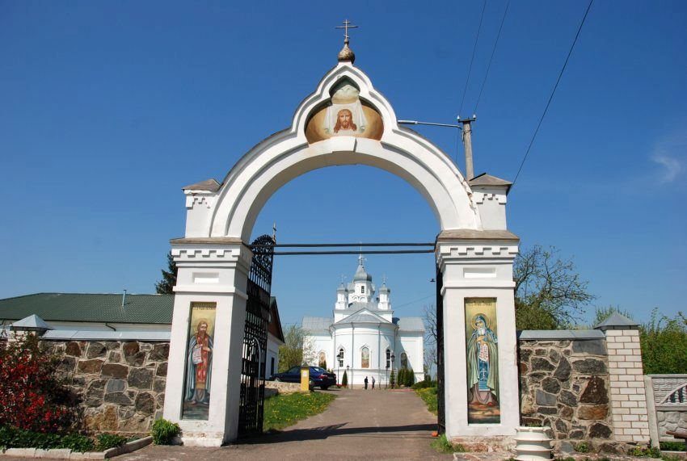
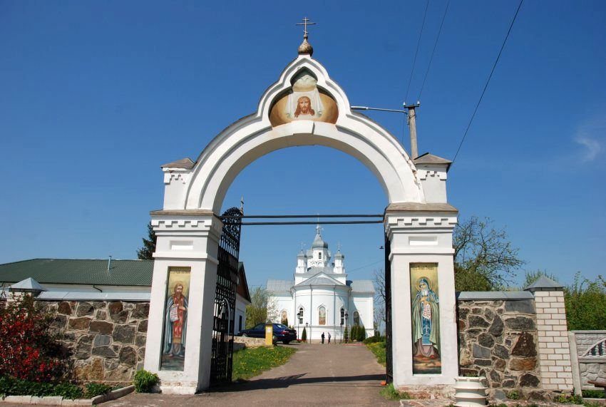

Пам'ятки України
Литовсько-польська доба
15 - 16 століттяТригірський монастир
1583 р.
Засновник:
князем Володимиром Житомирським
Архітектурний стиль:
українське бароко
Місце розташування:
c. Тригір'я, Житомирський район, Житомирська область
Вірування:
православ'я

 

Цікаві факти:
Монастир розташований на скелястому березі річки Тетерів. Час заснування його різні джерела вказують різний. Синодик обителі стверджує, що він був заснований у 1583 р. князем Володимиром Житомирським. Słownik geograficzny Królestwa Polskiego i innych krajów słowiańskich вказує, що у 1598 р. Олександр Воронич надав село Тригір'я на утримання монастиря. Історіограф монастиря А. Малевич заперечує це тому, що наприкінці XVI ст. Житомир не керувався князем, а належав до Волинського воєводства Речі Посполи
На підставі «Інвентаря» Тригірської обителі за 1775 р. він припускає, що монастир був заснований Володимиром Ольгердовичем, який у 1362–1394 рр. керував Київським князівством до якого належав і Житомир. З часом монастир був зруйнований якимись нападниками і відновив свою діяльність у 1613 р. завдяки братам Вороничам. На той час в монастирі була церква Святої Троїці.
Під час Хмельниччини обитель була розорена. У 1685 р. було збудовано новий дерев'яний храм Преображення Господнього. В першій половині XVIII ст. монастир перейшов у підпорядкування греко-католицької церкви, проте православні традиції продовжували в ньому існувати. Так поряд з латинською школою в ньому діяла і руська. З 1777 р. монастир утримував благодійну лікарню. У 1839 р. монастир було передано московській православній церкві. Ігумен Леоній Скибовський активно працював над навернення мирян Житомирщини та Київщини до православ'я, а сам монастир став місце утримання опозиційних греко-католицьких священників, яких тут намагалися навернути на православ'я.